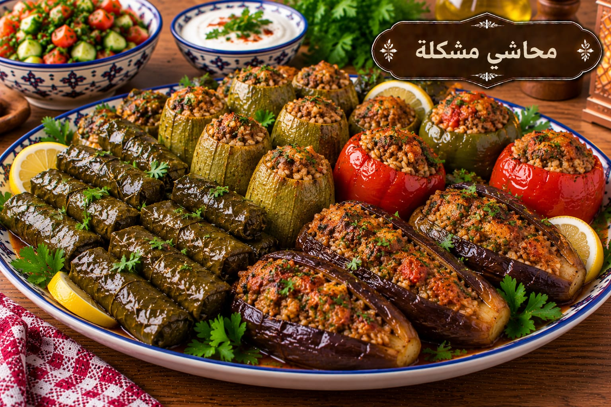

المحاشي المشكلة
خضار محشوة بالأرز واللحم

مقادير المحاشي المشكلة
- 2 كوب أرز قصير
- 1 كغ خضار مشكلة للحشي
- 300 غ لحم مفروم
- 2 ملعقة كبيرة زيت
- 1½ ملعقة صغيرة ملح
- 1 ملعقة صغيرة بهار مشكل
- ½ ملعقة صغيرة فلفل أسود
- 4 أكواب مرق
طريقة عمل المحاشي المشكلة
- اغسلي الأرز وصفيه واخلطيه باللحم والزيت والملح والبهارات.
- افرغي الخضار واحشي كل حبة حتى ثلاثة أرباعها حتى يجد الأرز مساحة للتمدد.
- رتبي الخضار في القدر وأضيفي المرق الساخن حتى يغطي نحو ثلثيها.
- بعد الغليان خففي النار وغطي القدر 50–60 دقيقة حتى ينضج الأرز والخضار تمامًا.